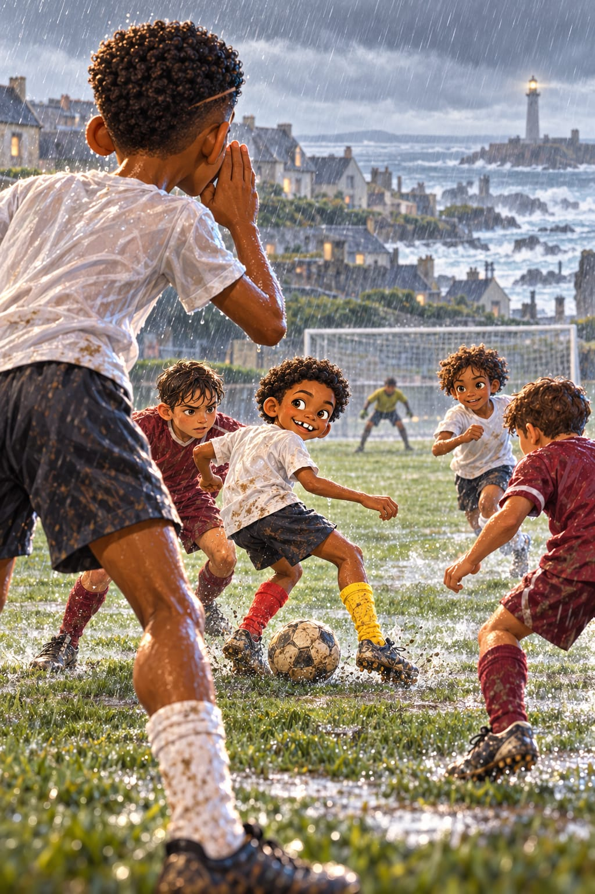
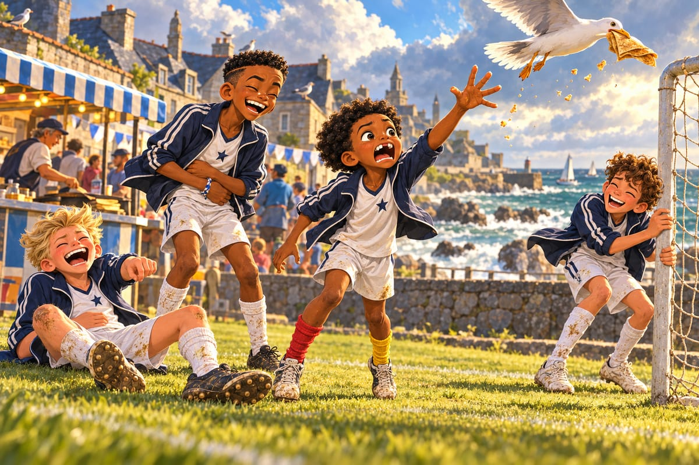
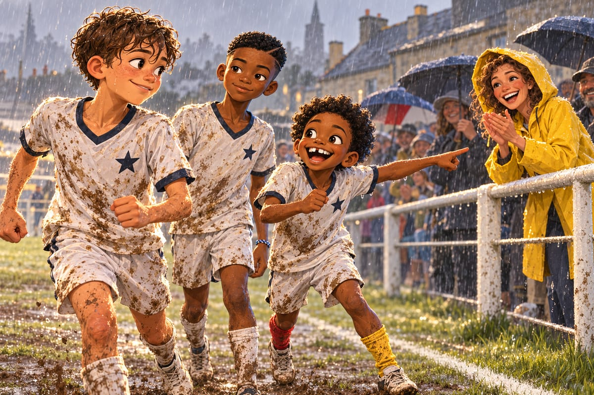
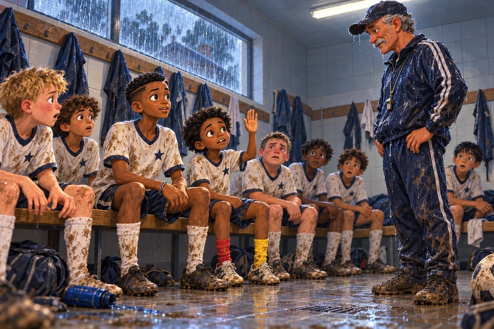

Parler, c’est passer

« MA CRÊPE ! »
Trop tard. La mouette file déjà vers la mer, la crêpe dans le bec, comme un avion de chasse.
Kaydoudou reste la main en l'air. Vide.
Dix secondes plus tôt, il levait encore vers le ciel sa toute première crêpe bretonne.
« Bri, regarde-moi ça. Beurre et sucre, pliée en quatre, toute chaude. Ils ont pris le pain au chocolat, ils l'ont aplati, et ils ont mis du beurre dedans. C'est le pays des génies. »
Et le ciel l'a prise.
Lucas tombe assis dans l'herbe. Kenzo se tient au poteau. BriBri rit tellement qu'il a mal aux côtes.

« Tu scannes tout, Kaydoudou. Le RER, le supermarché, la cantine. Mais le ciel, jamais. »
« Elle était dans mon angle mort », dit Kaydoudou avec une grande dignité.
« Première défaite du tournoi, annonce Kenzo. Kaydoudou contre une mouette : zéro à un. »
« À la ferme, les corbeaux font pareil avec les graines, dit Lucas. Il faut toujours surveiller le haut. »
Kaydoudou se tourne vers Lacombe, qui passe par là.
« Monsieur ! Il manque un mot à vos quatre mots ! MOUETTE ! »
« Refusé. »
« Alors je le crierai tout seul. »
Papa arrive en courant, son parapluie retourné par le vent comme une fleur à l'envers.
« Ce vent est pire que la neige de Waldorf ! » Il agite le programme. « Tournoi des Embruns, les garçons ! Seize centres de formation, venus de toute la France ! »
Une petite ville de granit gris face à la mer. Et un vent qui a un avis sur tout. Il dresse les cheveux de Lucas comme une botte de paille.
Les quatre mots, Lacombe les a écrits un mardi de janvier, sur le tableau blanc du vestiaire.
SEUL. HOMME. TOURNE. GARDE.
« À partir d'aujourd'hui, on ne fait plus de phrases sur le terrain. Le temps que tu finisses ta phrase, le ballon est parti. On dit un mot. Un seul. Et tout le monde comprend la même chose. » Il a tapé sur chaque mot. « Seul : personne ne vient, tu as le temps. Homme : un adversaire arrive, joue vite. Tourne : personne dans ton dos, retourne-toi. Garde : protège le ballon, on arrive. »
Kaydoudou a levé la main.
« Et si je veux dire : attention, il y a un monsieur derrière toi qui arrive assez vite et qui a l'air fâché ? »
« Homme. »
« Et si je veux dire : bravo, c'était une très jolie passe, je suis fier de toi ? »
Lacombe l'a regardé longtemps, sous sa moustache.
« Ce mot-là, on ne l'utilise pas encore. »
Ensuite, il les a interrogés tout l'hiver, comme à l'école.
« Le grand. Morel a le ballon, un adversaire lui fonce dessus. Tu dis quoi ? »
« Homme ! »
« Delattre. Ton coéquipier est tout seul. Tu dis quoi ? »
« Seul ! »
« Kaydoudou. Personne dans ton dos. Ton frère te crie quoi ? »
« Tourne ! »
« Et tu fais quoi ? »
« Je tourne, Monsieur. Sans regarder. Parce que c'est Bri. »
Kaydoudou venait de retrouver le terrain, encore un peu raide après le plâtre.
« Tu as changé, toi », lui a dit BriBri après le premier entraînement.
« Six semaines sur un banc, Bri. J'ai regardé. Maintenant, je vois avant. »
Depuis, c'est le 6, celui qui voit tout, qui parle le plus. Sa voix ne craque presque plus. Elle porte loin.
« Plus fort, le 6 ! crie Lacombe à chaque séance. Le vent ne t'entend pas ! »
En poule, l'ESM gagne ses trois matchs. Contre le Sporting Lorrain, l'équipe joue comme un seul corps.
Mathis reçoit en défense.
« Seul ! »
Il contrôle, tranquille. Lucas reçoit à droite, un attaquant lui fonce dessus.
« Homme ! »
Une touche, et le ballon est parti. Kenzo reçoit dos au but, un défenseur collé à lui.
« Garde ! »
Kenzo protège le ballon avec son corps, le temps que Kaydoudou arrive.
Onze garçons. Une seule paire d'yeux. Et ces yeux-là sont partout.
Sur le bord, Lacombe note quelque chose dans son petit carnet.
« Il écrit quoi ? » chuchote Kaydoudou.
« Sûrement pas bravo », dit Lucas.
En quart de finale, contre l'Olympique Côte d'Opale, c'est le match de Kaydoudou. Il se glisse entre les lignes comme la souris dans le mur de Mami.
« Tou… » commence BriBri.
« Je sais, Bri ! J'ai déjà regardé ! »
Kaydoudou s'est déjà tourné. Il fait marquer Kenzo en une touche. Puis il marque lui-même, d'un petit ballon piqué par-dessus le gardien.
« La souris a encore frappé ! » hurle-t-il, en faisant le tour du poteau de corner sans danser, parce que Lacombe l'interdit.
Sur le troisième but, BriBri ne lève même pas la tête. La passe part à l'aveugle, au sol. Kenzo la reçoit dans sa course comme si on la lui posait dans la main. 3‑0.
Kenzo revient lui taper dans la main, si fort que ça claque.
« Comment tu savais que j'étais là ? »
« J'ai regardé avant. »
« Kenzo ! crie Kaydoudou. La dame en ciré jaune, là-bas ! Elle crie ton nom ! »
Derrière la main courante, des boucles brunes dépassent d'une capuche jaune. Le visage de Kenzo s'allume comme une fenêtre le soir.

« C'est ma mère, souffle-t-il. Elle habite à une heure d'ici, chez mes grands-parents. Elle est venue sous la pluie. »
Lundi de Pâques. Demi-finale.
La pluie tombe de travers. Au loin, derrière les maisons de granit, un phare blanc se tient tout droit dans le gris.
En face, l'Athletic Club Garonne. Maillots bordeaux. Invaincus depuis le début de la saison.
« Regarde-les, Bri, souffle Kaydoudou. Ils sont grands. Ils sont calmes. Ils se passent le ballon comme on se passe le sel à table. »
« Ils sont grands comme des tracteurs », dit Lucas.
« Les tracteurs, ça tourne mal, dit Kaydoudou. Moi, je tourne bien. »
Lacombe réunit l'équipe sous la pluie.
« Ils sont plus grands que vous. Vous êtes plus bavards. Alors parlez. »
« Ça, Monsieur, c'est mon métier », dit Kaydoudou.
À la 20e minute, Garonne marque de la tête. Yanis, le gardien de l'ESM, touche le ballon du bout des doigts. Pas assez. 0‑1.
« Je l'avais touché ! crie Yanis. Je l'avais ! »
« C'est fini, grogne Mathis. Personne ne leur marque de but. »
« Alors on sera les premiers, dit BriBri. Seul ! Homme ! On reste ensemble ! »
À la mi-temps, Lacombe ne dit qu'une phrase : « Vous êtes menés. Pas battus. »
À la 50e minute, Kaydoudou se glisse entre les lignes.
Et le temps ralentit.
BriBri voit tout. Les gouttes de pluie qui brillent dans la lumière. L'afro de son frère, aplatie par l'eau. Ses chaussettes rouge et jaune, pleines de boue. Kaydoudou reçoit dos au jeu, coincé entre deux maillots bordeaux. Un milieu revient sur lui. Un défenseur l'attend à deux mètres, sur sa gauche.
Sur sa droite, rien. De l'herbe vide.
Kaydoudou ne peut pas le voir. Il a le dos tourné.
Moi, je le vois.
BriBri met une main en porte-voix.
« TOURNE ! »
Kaydoudou se tourne du côté vide. Sans vérifier. Il a confiance dans la voix de son frère comme dans le sol sous ses pieds. Toute la défense bordeaux recule d'un coup.
Sur la droite, Kenzo est déjà lancé, les boucles collées au front. Kaydoudou lui glisse le ballon. Kenzo frappe du gauche.
Sous la barre. Chhh.
1‑1.
Kaydoudou court vers son frère, les bras grands ouverts.
« Tu l'as vu pour moi ! Tu l'as vu ! Mon frère, c'est un phare ! »
« Et moi ? proteste Kenzo. J'ai marqué, je te signale ! »
« Toi, tu es le bateau. »
Le score ne bouge plus. 1‑1 au coup de sifflet final.
« Tirs au but, soupire Kenzo. Génial. »
« Qui tire en premier ? » demande Lacombe.
Personne ne répond. BriBri lève la main.
« Moi. »
Il marque. Il a fermé les yeux à la dernière seconde, mais il ne l'avouera jamais.
« Tu as fermé les yeux, Bri ! »
« Jamais de la vie. »
Le deuxième tir de l'ESM s'écrase sur le poteau. Bong.
« Si je rate, chuchote Kaydoudou en passant, je rentre au Cameroun à la nage. »
Une petite frappe sèche, à ras de terre. But. Kenzo marque aussi. Puis Yanis plonge sur le quatrième tir bordeaux et le sort du bout des gants.
« YANIS ! hurle tout le banc. LES MAINS ! »
Lucas s'avance pour le dernier tir, tout tremblant.
« Bri… je tremble. »
« Tremble et tire. »
Il tremble. Il tire. But. 4‑4.
« J'ai marqué ? J'ai VRAIMENT marqué ? »
Mort subite. Mathis pose le ballon.
« Je le mets où ? »
« Où tu veux, dit BriBri. On est avec toi. »
Mathis frappe fort. Le gardien bordeaux plonge du bon côté. Le tireur suivant de Garonne marque.
C'est fini.
Mathis tombe à genoux dans la boue. En dix secondes, ils sont tous autour de lui. Kaydoudou s'assoit carrément dans la boue à côté de lui.
« C'est pas grave, Mathis. Regarde, maintenant on est sales tous les deux. »
« Sans toi, on n'était même pas en demi », dit Kenzo.
« On a perdu ensemble, dit Lucas. Pas toi tout seul. »
BriBri pense au cercle de Belcourt. Il serre la nuque de Mathis sans rien dire.
Dans le vestiaire, personne ne parle. La pluie tambourine sur le toit.
La porte s'ouvre. Monsieur Lacombe entre, trempé, la moustache qui dégouline. Il regarde chaque garçon, un par un, longtemps.
Puis il dit :
« Bravo. »
Le silence devient encore plus lourd. Lucas laisse tomber sa gourde. Kenzo se redresse d'un coup. Mathis lève ses yeux rouges.
Et Kaydoudou, d'une toute petite voix :
« Monsieur, vous êtes malade ? »

« Je ne le dirai pas deux fois. »
Lacombe sort.
Une seconde de silence.
« Il a dit bravo à moi aussi ? demande Mathis. Moi qui ai raté ? »
« Il l'a dit à tout le monde », répond BriBri.
Puis le vestiaire explose.
« Il a dit bravo ! hurle Kenzo, debout sur le banc. Il a vraiment dit bravo ! »
« Je l'écris sur ma main, dit Lucas. Sinon, à la ferme, personne ne va me croire. »
« BRAVO ! crie Kaydoudou, juste pour l'entendre encore. BRAVO, BRAVO, BRAVO ! »
Et BriBri comprend une chose : on peut perdre un match et en sortir plus grand qu'en y entrant.
Le car roule dans la nuit, vers Paris. Presque tout le monde dort.
Kaydoudou dort sur l'épaule de Kenzo. Il s'est endormi au milieu d'une phrase sur les mouettes.
« Homme… mouette… », marmonne-t-il dans son sommeil.
« Il est lourd, ton frère », chuchote Kenzo.
« Je sais. Pousse-le, si tu veux. »
« Non. Il peut dormir. »
Devant, Papa, qui accompagne l'équipe comme parent bénévole, regarde son téléphone. Puis il remonte l'allée et s'accroupit à côté de BriBri.
« Je ne voulais pas te le dire ce soir, murmure-t-il. Mais je n'ai jamais su garder un secret avec toi. »
Il lui montre l'écran. Un message de son entreprise. BriBri ne lit qu'un seul mot, et son cœur se met à cogner.
Barcelone.
« Un poste à Barcelone, chuchote Papa. En septembre. Je n'ai pas encore dit oui. Mais… »
BriBri connaît ce « mais ». Il l'a entendu à Douala, au-dessus d'un plat de ndolé. Et au Maryland, dans la voiture, un soir de tournoi.
« On partirait quand ? »
« À la fin de l'été. »
« Kaydoudou le sait ? »
« Pas encore. Toi d'abord. » Papa jette un coup d'œil vers Kenzo. « Je sais, mon grand. Ce n'est jamais le bon moment pour partir. »
Il lui serre la main et retourne s'asseoir.
BriBri regarde de l'autre côté de l'allée. Kaydoudou ronfle doucement, la bouche ouverte. Et Kenzo, sans bruit, remonte son blouson sur les épaules de Kaydoudou pour qu'il n'ait pas froid.
BriBri connaît maintenant quatre mots pour tout dire sur un terrain. Seul. Homme. Tourne. Garde.
Mais pour dire à Kenzo qu'ils vont partir, il n'en connaît aucun.